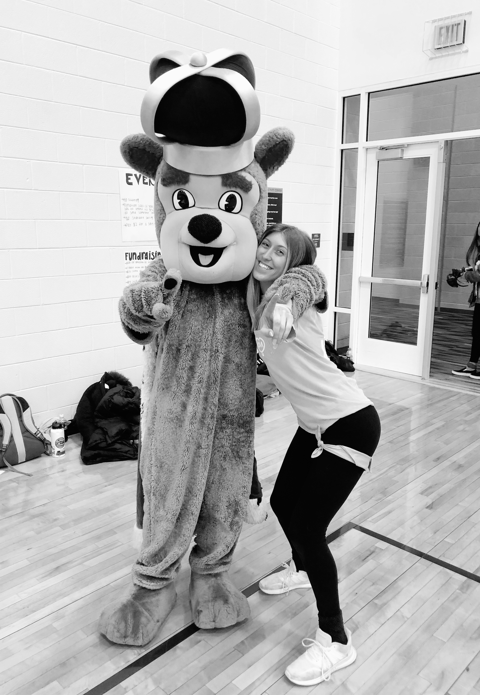

emmasisk.org sisker@dukes.jmu.edu Instagram: emma_sisk_
My name is Emma Sisk and I am a junior double major student at James Madison University. I am studying interactive design in the School of Media Arts and Design and public relations in the School of Communication Studies. I am the Executive Creative Director for Bluestone Communications, the student-run, nationally-affiliated public relations firm here at JMU. Additionally, I am a sister and the Historian Chairman of the Gamma Theta chapter of Phi Mu here on campus.
Personally, I enjoy browsing the internet and shopping. In my free time I enjoy watching YouTube videos, browsing Pinterest and spending time with my close friends and family. I am an avid watcher of the TV show The Bachelor, as are my friends. I love to shop at Plato's Closet and other thrift stores to find unique clothes that I can alter myself, through cutting and sewing. Some of my favorite clothing brands include Levi's, Adidas, Nike and Champion.
I have many goals for my future. I hope to attend graduate school in about a year and a half to study media/interactive design. School has always been something I enjoy, and I look forward to experiencing higher education on an even higher level. Career wise, I hope to work in creative fields involving logo/graphic design, videography, advertising/marketing and the like. Whether that is a continuation of my current freelance work or my beginnings with a new company, I am excited for the creative path that lies before me.

Me and the Duke Dog at MadiTHON, a 12-hour philanthropy dance marathon my sorority participates in.